| |
 |
|
 |
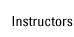

|
 |
|
Instructor Name: Elisa Au Fonseca
Owner and Chief Karate Instructor
Contact:elisa@fonsecamartialarts.com
Other Information:
Sensei Elisa Au Fonseca is recognized on the karate circuit as both a world-class athlete and a talented instructor; her accomplishments and reputation are particularly respected because she earned them at such a youngage. Even as she pursued her rigorous training and competition schedule as a teenager in her native state of Hawaii, she began teaching after school karate programs, sharing her competition-winning technique with students of all ages. Many of these children have pursued karate to become national champions. One of her students went on to win two junior world championship titles. She continues to advance her teaching methods in the Chicago area, here at Fonseca Martial Arts.
America’s Most Decorated Karate Athlete
Sensei Elisa Au Fonseca is a 3-time World Champion and is the only American woman to win the world championships in the sport of karate. Sensei Elisa is also the only female to win multiple world titles at a single world karate championship. Most recently, Sensei Elisa took a silver medal at the 2008 WKF World Championships in Tokyo. She has been competing since the age of ten and became a member of the USA National team at eighteen.
Competition-winning Instruction
Sensei Elisa is an experienced instructor with multiple karate and fitness certifications. Her teaching style stresses equal importance on all aspects of traditional karate including forms, sparring, and weapons training. While living in Hawaii, Sensei Elisa taught at the International Karate Federation (IKF) for over 10 years
and currently holds a 3rd degree black belt with the organization. Sensei Elisa has helped hundreds of children and adults learn the skills and values that karate has to offer. She developed the Punahou School karate program in Honolulu, which after only three years has attracted more than 200 students grades 1-6. She also has traveled the world, teaching karate seminars in Japan, Australia, Canada, New York, Las Vegas, Houston, San Diego and Miami.
Sensei Elisa currently lives in the Chicago area where she is co-owner of Fonseca Martial Arts in Skokie. Sensei Elisa also teaches at other locations such as at the Wilmette and Evanston dojos, as well as at the Evanston Park District.
Highlights:
• 3 Time WKF World Champion
• WKF Silver Medalist
• World Cup Champion
• 2005 AAU James E Sullivan Award Nominee
• Black Belt Magazine Hall of Fame
• 2 Time Pan American Champion
• 3 Time US Open Champion
• 9 Time National Champion
• 3rd Degree Black Belt
• 2008 USA-NKF Distinguished Athlete Award
• ACE (American Council on Exercise) Certified
Personal Trainer
|
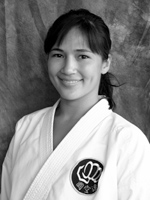
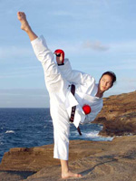
Click here to see Elisa's
article in Master's
Magazine, Spring 2007 |
|
Instructor Name: John Fonseca
Owner and Chief Karate Instructor
Contact:john@fonsecamartialarts.com
Other Information:
Chief Karate Instructor and owner, Sensei John Fonseca, has been competing in a wide range of national and international tournaments since the age of seven. In addition to his impressive competitive credentials, Sensei Fonseca also holds a 4th Degree Black Belt in Shotokan Karate, and is a nationally-certified Karate coach with significant teaching experience in the martial arts and fitness fields.
Competition Background
In 1996, Fonseca became the first American to medal at World Championships in almost twenty years. He is the only male karate athlete in the world to win repeat gold medals at the Pan American Games, and the only American karate athlete to win the Paris Open. His competitive accomplishments are recognized both nationally and internationally, earning him the U.S. Olympic Athlete of the Year award three years running and an induction into both the USAKF’s and Black Belt Magazine’s Halls of Fame.
Training award-winning athletes
Sensei Fonseca has been teaching children and adults martial arts for the last fifteen years. In 2003, he opened Elite Martial Arts & Fitness in Skokie, Illinois (now named Fonseca Martial Arts). The dojo has afforded Sensei Fonseca and his staff the ability to instruct several hundred students in the art of Karate and Judo, and Fonseca Martial Arts students continue to take top medals in the local, regional and national karate competition in which they’ve competed. Through martial arts instruction, students develop respect for others, a sense of personal responsibility and discipline as they develop their technique and skills. FMA's curriculum and approach are designed to work with people of all levels of skill and fitness, from beginning to advanced, to bring out the best in every individual.
The FMA Programs have now expanded into local schools, park districts, and corporate locations.
Highlights:
• 2004 AAU James E. Sullivan Award Nominee
• 3X U.S. Olympic Athlete of the Year
• 2X Pan American Games Gold Medalist
• 4X Pan American Karate Champion
• 6X Pan American Bronze Medalist
• Black Belt Magazine Hall of Fame
• USAKF Hall of Fame
• WKC World Championship Gold Medalist
• 2X WKF World Championship Bronze Medalist
• 3X WKF World Champion Bronze Medal Contender
• Paris Open Gold Medalist
• US Open Gold & Bronze Medalist
• 12X USANKF National Champion
• 5X AAU National Champion
• 3X USAKF National Champion
• Captain USANKF Karate Team 2000 - 2005; 2007-
2008
• 4th Degree Black Belt
• 2008 USA-NKF Distinguished Athlete Award
• ACE (American Council on Exercise) Certified Personal Trainer
• ASEP (American Sport Education Program) Certified Coach
|
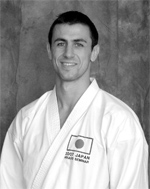
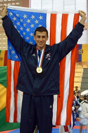
Click magazine issue to view John's appearances in BlackBelt Magazine and Masters Magazine:
Black Belt Magazine—Feb. 2003 v.41, n.3
Black Belt Magazine—Jan. 2002 v.40, n.1
Black Belt Magazine—Mar. 2009 v.43, n.1
Masters Magazine —
Winter. 2008 |
|
Instructor Name: Jack Pressman
Karate Instructor
Contact: sensei@samuraikaratedojo.com
Other Information:
Sensei Jack Pressman has been a practitioner of traditional Japanese and Korean Martial Arts since 1976. Sensei Pressman has achieved senior Black Belt Rank in both Japanese Karate and Korean Tae Kwon Do. In addition, Sensei Pressman has trained continuously in Ju-Jutsu, Judo and Thai kick Boxing for the past 32 years.
In 1984, Sensei Pressman was first selected to the United States National Karate Team. Over the past twenty years, Sensei Pressman has medaled 20 times in the United States National Karate Championships winning 8 United States National Karate Championship titles and medaling 13 times in international competition.
In 1996, Sensei Pressman was selected as Captain of the United States National Karate Team and in 1997 was selected to join the National Team Coaching Staff (as sanctioned under the US Olympic Committee).
In 2002, Sensei Pressman won his 20th National Championship medal, winning the Bronze Medal at the United States National Karate Team Trials in the Men’s Heavyweight Division. This marked his 19th year as a qualifying member of the United States National Karate Team (as sanctioned under the United States Olympic Committee.
In 2005, Sensei Pressman was selected as Head Coach for the United States National Karate Team for the 2005 World Maccabiah Games held in Israel. The Team won 21 medals (8 Gold, 7 Silver, 6 Bronze) including the Men’s Team Kumite Gold Medal. This marked the first time in United States Olympic Karate history that a Men’s Kumite Team has won the Gold Medal in an International Olympic sanctioned event outside the Pan Americas.
Sensei Pressman is the most senior member of the United States National Team and has become the longest active Team member in United States Karate history.
|
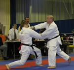 |
|
Instructor Name: Gabriel Veras
Karate Instructor
Contact:gabriel.veras@myoasis.colum.edu
Other Information:
Sensei Veras is a current member of the United States National Karate Team. He has been training in GoJu-Ryu Karate for 16 years and has been instructing for the past 6 years. He is a current U.S. National Champion in -75kg. category and recently represented his country at the 2006 WKF World Championships in Tampere, Finland. |
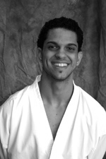 |
|
Instructor Name: Alberto Lopez
Karate / MMA Instructor
Contact: gothamselfdefense@me.com
Other Information:
Sensei Alberto's experience in the martial arts spans over 20 years. His time as a competitive wrestler, karateka and submission grappler has served to make him a well rounded instructor. He has trained with legendary martial artists Sifu Dan Inosanto, Sensei Kiyoshi Yamazaki, Guro Edgar Sulite, and Renzo Gracie among others. He has gained a wealth of experience in various striking, grappling, and weapons systems. He currently holds the rank of San Dan (3rd degree black belt) in Shotokan Karate.
Highlights of his martial arts career include training in Japan and Brazil.
He is a veteran of the United States Marine Corps where he served as an infantryman and marksmanship instructor.
Apart from teaching adults, he has many years of experience teaching children of all ages as well as students with special needs.
Related Links: gothamselfdefense.com
|
 |
|
Instructor Name: Amanda Hight
Karate Instructor
Contact: krtewmn@yahoo.com
Other Information:
Sensei Amanda Hight is a member of both the USA-NKF and AAU National Karate Teams. She has been doing karate for the past twelve years and has participated in competitions all over the world. Besides being an AAU National Kumite (Sparring) Champion, Sensei Hight took a gold medal in Kata (Forms) division at the 2005 WKC World Karate Championships in Belgrade, Serbia. Sensei Hight recently competed in the 3rd International Martial Arts Games in April of 2008, in Bangkok, Thailand where she took gold in individual kumite and silver in team kumite (sparring).
|
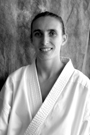 |
|
Instructor Name: Jilly Plonsker
Karate Instructor
Other Information:
Sensei Jilly Plonsker has been training in Shotokan Karate for twelve years and has been instructing for the past three years. She is a current member of the AAU National Karate Team and a two time national gold medalist. Sensei Jilly is a senior at Deerfield High School and plans to attend University of Michigan in the fall. Besides being a great student, teacher, and competitor, Sensei Jilly is also an AP and Illinois State Scholar. |
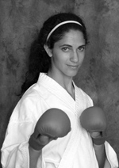 |
|
Instructor Name: Pedja Obradovic
Karate Instructor
Other Information:
Sensei Pedja Obradovic has been training in Shotokan Karate for twenty years and has been teaching for the past eight years. He is a Serbian national champion and has competed in the WKF circuit for the past ten years. Sensei Pedja also has his degree in Exercise Science and has taught physical education for the past four years. |
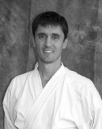 |
|
Instructor Name: Mike S. Eugenio
Mike S. Eugenio teaches Filipino Martial Arts, Temple Style Tai Chi Chuan, and is thefounding member of Sagasa Martial Arts Circle (S.M.A.C.)
Contact: Ekim60618@yahoo.com
Other Information:
Mike Eugenio has 15 years of experience in Filipino Martial Arts alone. Recognized for his exceptional talent, he was awarded the rank of Lakan Guru under the tutelage of world-renowned martial arts instructor Ron Balicki (Martial Arts Research Systems) full instructor of Guru Dan Inosanto. Having survived real life street violence back home in his native country (Philippines) and here in our own city of Chicago, Mike Eugenio has a clear knowledge and understanding of the cold, and heartless, reality of self-defense situations. His way of teaching is based on combinations of strong traditions with modern training methods.
"Learning one type of martial art is good, learning two is better, knowing three ways is mastery of self, but understanding the principles makes you an artist of life."
He is also a long time disciple of Gat Puno Abon Baet (founder of Garimot System), and Master Jose Perez (Temple Style Tai Chi Chuan). Like his teachers, he will forever be on an endless quest of training and research in the world of martial arts. Other arts he has proudly trained in are: Harimaw Lumad Buno, Mande Muda Silat, Shoot Wrestling, Muay Thai (TBA), Gracie Jiu Jitsu, Judo, Lameco Eskrima, and Serrada Eskrima. |
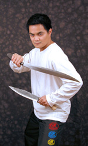 |
|
Instructor Name: Steve Chan
WingTsun Instructor
Contact:stevechan10@gmail.com
Other Information:
Steve Chan has been training in martial arts since 1990, starting with the hand to hand combat courses taught to him as a U.S. Marine. Since that time, he has trained in various martial arts including Tae Kwon Do, Aikido, Escrima, Judo, Western Boxing, Fencing, Kenjitsu and Tai Chi.
Steve started training in WingTsun in 1996 under Sifu Mike Adams and has been teaching WingTsun since 2001. He continues his training with Sifu Mike Adams as well as other sifus around the country. He also attends regular seminars with Great Grandmaster Leung Ting
|
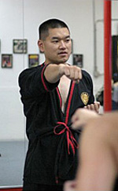 |
|
Instructor Name: Eddie Redzovic
Chief Instructor of Gracie Brazilian
JiuJitsu at Gracie Barra Wilmette
Contact:ChicagoJiuJitsu@aol.com
Other Information:
Eddie Redzovic received his black belt from Carlos Gracie Jr. He is the head instructor of Gracie Barra Chicago and Gracie Barra Wilmette.
Related Links: www.chicagojiujitsu.com |
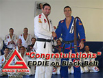 |
|
Instructors Names: Alexander Pinto and Chris Pinto (with Carlos Gracie Jr.)
Instructors of Gracie Brazilian JiuJitsu at Gracie Barra Wilmette
Contact:ChicagoJiuJitsu@aol.com
Other Information:
Alex now holds a brown belt in Gracie Brazilian JiuJitsu, while Chris has been promoted to purple belt.
Related Links: www.chicagojiujitsu.com |
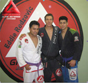 |
|
Instructor Name: Art Benjamin
Head instructor of the Aikido program at
the Evanston Dojo
Contact: info@aikidoevanston.com
Other Information:
Arthur Benjamin Sensei has more than thirty years of Aikido experience. He began his study of Aikido philosophy and technique in 1973 under Aikira Tohei Sensei. In 1975, Benjamin Sensei met the principle influence of his Aikido career, Mitsugi Saotome Sensei. Saotome Sensei is the founder and chief supervisory instructor for more than 70 affiliated dojos of the international association, Aikido Schools of Ueshiba (ASU).
Benjamin Sensei counts himself fortunate to have trained and associated with the members of ASU while gaining the guidance provided over the years from Saotome Sensei, Ikeda Sensei, Suzuki Sensei as well as countless visiting instructors who brought valuable expertise. The martial arts education provided through ASU remains the major aspect of Benjamin Sensei’s Aikido. Benjamin Sensei has also trained abroad.
In 1992, after nineteen years of ceaseless training, he founded NorthShore Aikido in Skokie, Illinois, where he taught and trained students for thirteen years. To this day, he considers those years among the best of his Aikido career. In 2000, Benjamin Sensei was awarded a 6th degree black belt through Saotome Sensei and the Aikido World Headquarters in Japan.
Currently, with much enthusiasm, Benjamin Sensei begins a new chapter by founding Aikido of Evanston, which is located at Fonseca Martial Arts at 823 ½ Chicago Ave. Evanston IL. He is proud to be associated with the high quality instruction provided at Fonseca Martial Arts by Elisa and John Fonseca Senseis in Karate, and Yoshinaga Sensei for Judo.
Related Links:
www.aikidoevanston.com |
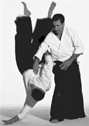 |
|
Instructor Name: John Reich
Head instructor of the Aikido program at
the Chicago Dojo
Contact: americanaikidochicago@comcast.net
Other Information:
John Reich Sensei begain his Aikido training with Howard Sensei in February, 1999. He was promoted to shodan in 2002 and nidan in 2007. He opened the Chicago, Illinois dojo in April, 2004.
Related Links:
www.americanaikido.com |
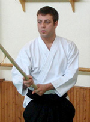 |
|
Instructor Name: Sensei Takayuki Yoshinaga
Head instructor of Kokushikan Judo Academy
Other Information:
Sensei Yoshinaga, an 8th degree Black Belt from the Kodukan, and one of the highest ranking judo instructors in the U.S. is the Chief Judo Instructor of the Kokushikan Judo Academy. His judo program emphasizes the ancient art's signature throwing techniques, grappling, special pins, control holds, arm locks and choking techniques.
|
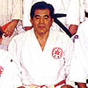 |
|
Instructor Name: Michael White
MMA Instructor
Head MMA instructor at Evanston Dojo
Contact:gouken1@hotmail.com
Other Information:
This Mixed Martial Arts class combines boxing, Muay Thai, Greco Roman Wrestling, Judo, Jiu-Jitsu, Sambo and Vale Tudo. Each of these individual styles are taught in a method that allows the student to defend and attack in any possible position, allowing one to draw solely from one style or to use a combination of them in one seamless fighting style that is appropriate for fighting on the ground or standing up. This training method provides the student with a variety of techniques and tactics to respond to many different situations.
|
 |
|
|
|
|
|
|
|
|